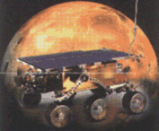
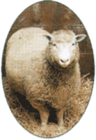
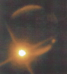
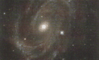
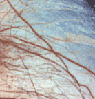

| |
|
1992
 Büyük
patlama kuramýnýn kanýtlarý bulundu. Lawrence Berkeley
Laboratuvarlarý ve California Üniversitesi'nin ortak yürüttüðü
bir projede, George Smoot baþkanlýðýndaki bir
grup araþtýrmacý, COBE (Cosmic Backround Explorer)
uydusunun evrendeki fon ýþýmasýndaki ýsý
dalgalanmalarýnýn büyük patlamadan kaldýðýný keþfettiler. Büyük
patlama kuramýnýn kanýtlarý bulundu. Lawrence Berkeley
Laboratuvarlarý ve California Üniversitesi'nin ortak yürüttüðü
bir projede, George Smoot baþkanlýðýndaki bir
grup araþtýrmacý, COBE (Cosmic Backround Explorer)
uydusunun evrendeki fon ýþýmasýndaki ýsý
dalgalanmalarýnýn büyük patlamadan kaldýðýný keþfettiler.
|
| 1994
Karadeliklerin
varlýðýna iliþkin kanýtlar bulundu. Hubble uzay
teleskopunun verilerine göre 52 milyon ýþýk yýlý ötede
bir karadelik gözlendi. Kardeliklerin varlýgý Albert
Einstein tarafýndan genel görelik kuramý kapsamýnda öngörülmüþtü.
M87 adý verilen bu karadelik, Einstein'ýn öngörüsünün
bir kanýtý niteliði taþýyor.
|
| 1995 Bilim
adamlarý gezegen sistemine sahip güneþ benzeri yýldýzlar
keþfetti. Ýki grup gökbilimci üç ay arayla çevresinde
gezegenler olan yýldýzlar buldular. Aslýnda 1994 yýlýnda
Güneþ sistemi dýþýnda da gezegenler bulunmuþtu. Ne
var ki bunlar ölü yýldýzlarýn, pulsarlarýn çevresinde
dönüyorlardý. Dünya'dan 42 ýþýk yýlý uzaklýkta
bulunan yeni gezegenlerse güneþimiz benzeri yýldýzlarýn
çevresinde dönüyorlar.
|
| 1997
 Viking
uzay sondalarýndan yýllar sonra Pathfinder, Mars'a inen
ilk araç oldu. Dünya'dan 1996 yýlýnda fýrlatýlan araç,
yaklaþýk 500 milyon
kilomtre yol aldýktan sonra Mars'a "düþürüldü."
Pathfinder, Vikinglerin kaldýðý yerden Mars hakkýnda
bilgiler iletti dünyaya.
|
| 1997
 Ýlk
genetik kopyalama gerçekleþtirildi. Bir grup Ýskoç
bilim adamý Þubat ayýnda ergen bir memelinin genetik
kopyasýný yarattýklarýný duyurdular. Bu, genetik alanýndaki
birçok uzmanýn gerçekleþtirilmesine
olanaksýz gözüyle baktýgý bir iþlemdi. Dolly adlý
koyunun kopyalanmasýnýn baþarýyla sonuçlandýðýnýn
duyurulmasý beraberinde yeni tartýþmalarý da getirdi.
Bunlarýn en baþta geleni de kopyalamanýn ahlaki yanýydý.
Bu teknikle insan kopyalamanýn zararlarý üzerinde
duruldu ve bunun yalnýzca tarýmsal ve týbbi amaçlarla
kullanýlmasý gerektiði vurgulandý.
|
|
| 1993
En
yaþlý dinozor bulundu. Arjantin'de And Daðlarý eteðindeki
Ischigualsto doðal parkýnda bulunan bu dinozorun bir
evoraptor olduðu açýklandý. 1 metre boyunda, 11 kilo
aðýrlýðýnda olduðu anlaþýlan bu dinozorun yaklaþýk
225 milyon önce yaþadýðý açýklandý. Arka ayaklarý
üzerinde yürüyen evoraptorlar, etobur canlýlardý. |
| 1994
 Jüpiter'e
kuyrukluyýldýz çarpýþý gözlendi. 4.8 milyon
kilometre uzunluðundaki kozmik dev kuyrukluyýldýzýn
adý, onu keþfeden gökbilimcilere atfen Shoemaker-Levy
9'du. 16 Temmuz'da baþlayan çarpýþma günlerce sürmüþ
ve 21 Temmuz'da sona ermiþti.
|
| 1995 Ýki
ayaðý üzerinde yürüyebilen insansýlarýn en eski
örneði bulundu. Prof. Mealakey ve çalýþma arkadaþlarý
Kenya'nýn kuzeyinde yürüttükleri çalýþmalarda
Austrolopithecus anemensis adýný verdikleri bir insansý
kalýntýsý buldular. 4,2 ile 3,9 milyon yýl önce yaþamýþ
olan bu insansý, türün bilinenden 500000 yýl önce
ayaða kalktýðýný gösteriyordu. |
| 1996
 Uzay
Teleskopu milyarlarca yeni gökada keþfetti. Her gökadanýn
yaklaþýk 50-100 milyar yýldýz içerdiðini söyleyen
gökbilimciler bunlarýn bilinen gökada biçimlerinden
farklý olduðunu da açýða çýkardýlar. Bu
bulgularda spiral ya da eliptik olmayan, daha önce görülmemiþ
þekillerde yeni gökadalar da vardý.
|
| 1997
 Güneþ
sisteminde Dünya dýþýnda bir yaþam olasýlýðý, Jüpiter'in
16 uydusundan biri olan Europa'da olabileceði bulundu.
Galileo uzay sondasýnýn
gönderdiði ayrýntýlý Europa yüzey görüntülerinde
gezegende buz tutmuþ bir okyanus gözlemlendi. Bu da yaþam
için gerekli olan suyun varlýðýný gösteriyordu.
|
| 1999
Galileo
uzay aracý Jüpiter'in uydusu lo'da bir volkan patlamasý
görüntüledi. Güneþ sisteminde görülen en büyük
volkan olduðu belirtilen dev volkan, 1,5 km yüksekliðinde
lav püskürtüyordu. |
|
|